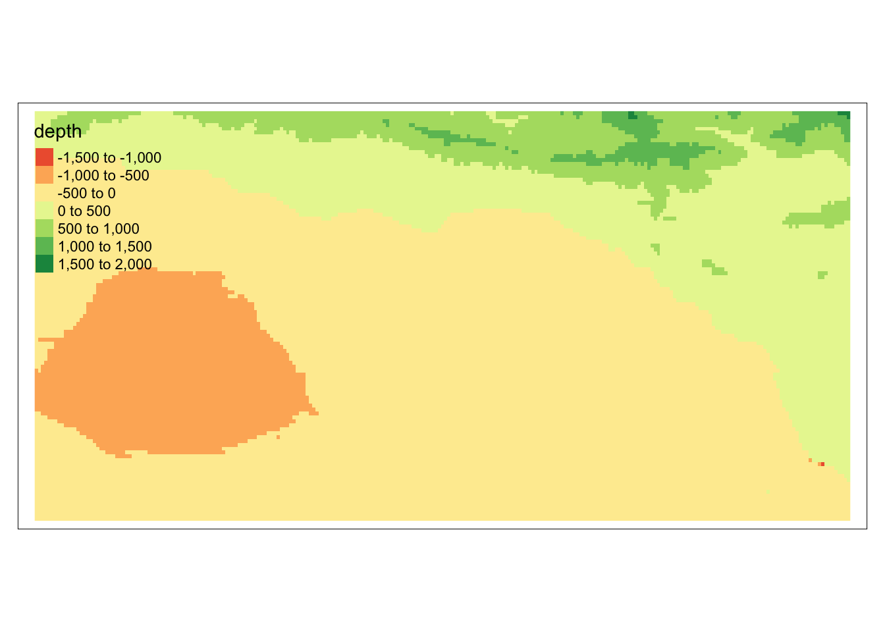

source: https://fieldnotesjournal.org/new-blog/apearlintheroughoysteraquacultureandhowitworks
Overview
Marine aquaculture has the potential to play an important role in the global food supply as a more sustainable protein option than land-based meat production.1 Gentry et al.
For this small project, we will determine which Exclusive Economic Zones (EEZ) on the West Coast of the US are best suited to developing marine aquaculture for several species of oysters.
Based on previous research, we know that oysters needs the following conditions for optimal growth:
- sea surface temperature: 11-30 deg C
- depth: 0-70 meters below sea level
Utilized skills:
- combining vector raster data
- resampling raster data
- masking raster data
- map algebra
Data
Sea Surface Temperature
We will use average annual sea surface temperature (SST) from the years 2008 to 2012 to characterize the average sea surface temperature within the region. The data we are working with was originally generated from NOAA’s 5km Daily Global Satellite Sea Surface Temperature Anomaly v3.1.
Bathymetry
To characterize the depth of the ocean we will use the General Bathymetric Chart of the Oceans (GEBCO).2
Exclusive Economic Zones
We will be designating maritime boundaries using Exclusive Economic Zones off of the west coast of US from Marineregions.org.
Prepare data
To start, we need to load all necessary data and make sure it has the coordinate reference system.
West coast regions:
# Read in the shapefile for the West Coast EEZ (`wc_regions_clean.shp`)
wc_regions <- st_read(here(file_path, "data/wc_regions_clean.shp"))Reading layer `wc_regions_clean' from data source
`/Users/jaredpetry/Documents/MEDS/quarto_website/jaredbpetry.github.io/Posts/marine_aquaculture_geospatial/data/wc_regions_clean.shp'
using driver `ESRI Shapefile'
Simple feature collection with 5 features and 5 fields
Geometry type: MULTIPOLYGON
Dimension: XY
Bounding box: xmin: -129.1635 ymin: 30.542 xmax: -117.097 ymax: 49.00031
Geodetic CRS: WGS 84plot(wc_regions$geometry)Sea surface tmeperature:
# Read in sea surface temperature rasters and combine them into a raster stack
# use list.files() to read in our data
#--- you start with a bunch of tif files that you want to stack
#--- I created a list of just the ones starting with the letter "a" to get the sst rasters I wanted
file_list <- list.files(path = "data/", pattern = "^[a]", full.names = TRUE)
#--- now read them in using rast... this will create a spatraster with multiple layers
#--- (this isn't an actual raster stack so let's see if this works.. terra calls them the same thing)
sst_spatrast <- rast(file_list)
plot(sst_spatrast$average_annual_sst_2009)#--- at this point you get a crs that says epsg4326 AND epsg9122 so we'll have to change thatBathymetry raster:
# Read in bathymetry raster (`depth.tif`)
depth <- rast(here(file_path, "data/depth.tif"))
plot(depth)Reprojecting data so they match in their coordinate reference system:
#--- depth raster is in lon/lat wgs84 EPSG:4326
#--- wc_regions polygons in wgs84
#--- sst_spatraster says lon/lat wgs84
#depth <- st_transform(depth, crs = crs(sst_spatrast))
set.crs(sst_spatrast, "EPSG:4326")
set.crs(depth, "EPSG:4326")
st_transform(wc_regions, crs = crs(depth)) #--- great now they are same crsSimple feature collection with 5 features and 5 fields
Geometry type: MULTIPOLYGON
Dimension: XY
Bounding box: xmin: -129.1635 ymin: 30.542 xmax: -117.097 ymax: 49.00031
Geodetic CRS: WGS 84
rgn rgn_key area_m2 rgn_id area_km2
1 Oregon OR 179994061293 1 179994.06
2 Northern California CA-N 164378809215 2 164378.81
3 Central California CA-C 202738329147 3 202738.33
4 Southern California CA-S 206860777840 4 206860.78
5 Washington WA 66898309678 5 66898.31
geometry
1 MULTIPOLYGON (((-123.4318 4...
2 MULTIPOLYGON (((-124.2102 4...
3 MULTIPOLYGON (((-122.9928 3...
4 MULTIPOLYGON (((-120.6505 3...
5 MULTIPOLYGON (((-122.7675 4...Process data
Next, we need process the SST and depth data so that they can be combined. In this case the SST and depth data have slightly different resolutions, extents, and positions. We don’t want to change the underlying depth data, so we will need to resample to match the SST data using the nearest neighbor approach.
Find the mean SST from 2008-2012
mean_sst_spatrast <- terra::app(sst_spatrast, mean) Convert SST data from Kelvin to Celsius
mean_sst_C <- mean_sst_spatrast - 273.15Crop depth raster to match the extent of the SST raster
depth_cropped <- extend(depth, mean_sst_C)Resample the NPP data to match the resolution of the SST data using the nearest neighbor approach
depth_cropped_resampled <- resample(depth_cropped, mean_sst_C,
method = "near")Check that the depth and SST match in resolution, extent, and coordinate reference system… can the rasters be stacked?
#--- try to stack the depth raster and the SST raster:
depth_and_sst <- raster::stack(c(depth_cropped_resampled, mean_sst_C))
#--- yes! they can be stackedFind suitable locations
In order to find suitable locations for marine aquaculture, we’ll need to find locations that are suitable in terms of both SST and depth.
Reclassify SST and depth data into locations that are suitable for oysters. We will do this by setting suitable values to 1 and unsuitable values to NA
The first plot will show suitable depth for oysters and the second will showsuitable sea surface temperature.
#--- for oysters, we need 11 <= sst(C) <= 30
#------ and 0 <= depth <= 70
#--- set up reclassification matrices
depth_rcl <- matrix(c(-8000, -70, NA,
-70, 0, 1,
0, 5000, NA),
ncol = 3, byrow = TRUE)
sst_rcl <- matrix(c(-Inf, 11, NA,
11, 30, 1,
30, Inf, NA),
ncol = 3, byrow = TRUE)
#--- use these to classify your rasters
suitable_sst <- classify(mean_sst_C, rcl = sst_rcl)
suitable_depth <- classify(depth_cropped_resampled, rcl = depth_rcl)
#--- Plot what you just made for each
raster::plot(suitable_depth, col = "blue") raster::plot(suitable_sst, col = "blue")Find locations that satisfy both SST and depth conditions
- create an overlay using the lapp() function multiplying cell values - we will use terra::lapp()
#--- we want to multiply cell values so that with any NA in either layer, result will also be NA, with two 1s, the result will also be a 1
fun = function(x,y) {
return(x*y)
}
oyster_habitat <- lapp(c(suitable_depth, suitable_sst), fun)
plot(oyster_habitat, col = "blue")
Determine the most suitable EEZ
We want to determine the total suitable area within each EEZ in order to rank zones by priority. To do so, we need to find the total area of suitable locations within each EEZ.
- select suitable cells within West Coast EEZs
- find area of grid cells
- find the total suitable area within each EEZ
- find the percentage of each zone that is suitable
#--- remember, our eez regions are the wc_regions we reprojected earlier
# select suitable cells within West Coast EEZs
#----first rasterize the wc_regions data to create rast_eez
rast_regions <- terra::rasterize(wc_regions, oyster_habitat, field = "rgn")
# compute the area covered by the raster cells of suitable habitat
#--- terra::cellSize() will compute the area covered by each individual cell
area_habitat <- cellSize(oyster_habitat, unit = "km", transform = TRUE)
#--- create mask that will display the suitable habitat separated into the different eez regions
mask <- mask(rast_regions, oyster_habitat)
#--- terra::zonal() will compute summaries of values of a spatraster defined by the "zones" of a different spatraster. We will use this to compute the suitable area
habitat_area <- terra::zonal(area_habitat, mask, sum)
#--- use left_join() to create a dataframe that contains both the suitable area by region and the percentage of habitat area out of the total area for that region
habitat_by_region_df <- left_join(wc_regions, habitat_area, by = "rgn")
habitat_by_region_df$area_percent = (habitat_by_region_df$area / habitat_by_region_df$area_km2)*100
#--- show results in a table
print_df <- habitat_by_region_df |>
terra::as.data.frame() |>
dplyr::select(rgn, area, area_percent) |>
dplyr::rename("Oyster Habitat Area" = area,
"EEZ region" = rgn,
"Habitat Percent of Total Region Area" = area_percent)
print_df EEZ region Oyster Habitat Area Habitat Percent of Total Region Area
1 Oregon 1074.2720 0.5968374
2 Northern California 178.0268 0.1083028
3 Central California 4069.8766 2.0074530
4 Southern California 3757.2849 1.8163351
5 Washington 2378.3137 3.5551178Visualize results
Now that we have results, we need to present them!
We will create the following maps:
- total suitable area by region
- percent suitable area by region
#--- map of total area
area_map <- tm_shape(habitat_by_region_df) +
tm_polygons(col = "area",
palette = rev(hcl.colors(3, "BluGrn")),
title = "Habitat Area (square km)",
legend.reverse = TRUE) +
tm_shape(oyster_habitat) +
tm_raster(title = "Habitat") +
tm_layout(legend.outside = TRUE,
main.title.size = 1,
main.title = "Suitable habitat area for oysters by EEZ region")
area_map#--- map of percentage
percent_map <- tm_shape(habitat_by_region_df) +
tm_polygons(col = "area_percent",
palette = rev(hcl.colors(3, "BluGrn")),
title = "Percentage") +
tm_shape(oyster_habitat) +
tm_raster(title = "Habitat") +
tm_layout(legend.outside = TRUE,
main.title.size = 1,
main.title = "Suitable habitat for oysters: percentage of total EEZ region",
frame = T)
percent_mapBroaden the workflow!
Now that we’ve worked through the suitable habitat areas for one group of species, let’s update our workflow to work for other species. We will do this by creating a function that would allow you to reproduce your results for other species. It will be able to do the following:
- accept temperature and depth ranges and species name as inputs
- create maps of total suitable area and percent suitable area per EEZ with the species name in the title
find_suitable_habitat <- function(spp_name, temp_min, temp_max, depth_min, depth_max) {
depth_rcl <- matrix(c(-Inf, depth_min, NA,
depth_min, depth_max, 1,
depth_max, Inf, NA),
ncol = 3, byrow = TRUE)
sst_rcl <- matrix(c(-Inf, temp_min, NA,
temp_min, temp_max, 1,
temp_max, Inf, NA),
ncol = 3, byrow = TRUE)
suitable_sst <- classify(mean_sst_C, rcl = sst_rcl)
suitable_depth <- classify(depth_cropped_resampled, rcl = depth_rcl)
oyster_habitat <- lapp(c(suitable_depth, suitable_sst), fun)
rast_regions <- terra::rasterize(wc_regions, oyster_habitat, field = "rgn")
area_suitable <- cellSize(oyster_habitat, unit = "km", transform = TRUE)
mask <- mask(rast_regions, oyster_habitat)
area_per_zone <- terra::zonal(area_suitable, mask, sum)
df_habitat_rgn <- left_join(wc_regions, area_per_zone, by = "rgn")
df_habitat_rgn$area_percent <- (df_habitat_rgn$area / df_habitat_rgn$area_km2)*100
#--- map of total area
area_and_percent_map <- tmap_arrange(tm_shape(df_habitat_rgn) +
tm_polygons(col = "area",
palette = rev(hcl.colors(3, "BluGrn")),
title = "Area(km sq.)",
legend.reverse = TRUE) +
tm_shape(oyster_habitat) +
tm_raster(title = "Habitat") +
tm_layout(legend.outside = TRUE,
legend.title.size = 0.8,
legend.text.size = 0.5,
main.title.size = 0.8,
main.title = paste0(spp_name, " habitat by EEZ region")),
percent_map <- tm_shape(df_habitat_rgn) +
tm_polygons(col = "area_percent",
palette = rev(hcl.colors(3, "BluGrn")),
title = "Percentage") +
tm_shape(oyster_habitat) +
tm_raster(title = "Habitat") +
tm_layout(legend.outside = TRUE,
legend.title.size = 0.8,
legend.text.size = 0.5,
main.title.size = 0.8,
main.title = paste0(spp_name, " habitat percentage of EEZ region"),
frame = T))
area_and_percent_map
}
#--- test the function (arbitrary values)
find_suitable_habitat(spp_name = "spp of interest", 5, 15, -100, 0)Anyone who wants to reproduce this workflow can do so easily! Run your function for a species of your choice! You can find information on species depth and temperature requirements on SeaLifeBase. Remember, we are thinking about the potential for marine aquaculture, so these species should have some reasonable potential for commercial consumption.
I chose the American Lobster because it is a highly sought after food that could return lots of profit if grown in the right place. I used to work at a fish market and it was extremely hard to get lobster because it is so hard to get nowadays! The temperature range is 11-19 degC and the depth range is sea level to 480 meters deep.
find_suitable_habitat(spp_name = "American lobster", 11, 19, -480, 0)SB depth data… just for fun
Can I do a SB analysis with the depth data? I was going to try this to see bathymetry data for surf spot intel… however the data wasn’t high enough resolution. Oh well it still looks cool at least
rast_to_crop <- depth
lat_up <- 34.522
lat_down <- 34.085
lon_up <- -120.223
lon_down <- -119.171
#--- formatting for ext(): -180, 180, -90, 90 (xmin, xmax, ymin, ymax)
extent_of_crop <- terra::ext(lon_up, lon_down, lat_down, lat_up)
sb_depth <- crop(rast_to_crop, extent_of_crop)
#--- also crop the basemap to the same thing
#sb_basemap <- extend(wc_regions, sb_depth)
tm_shape(sb_depth) + tm_raster()